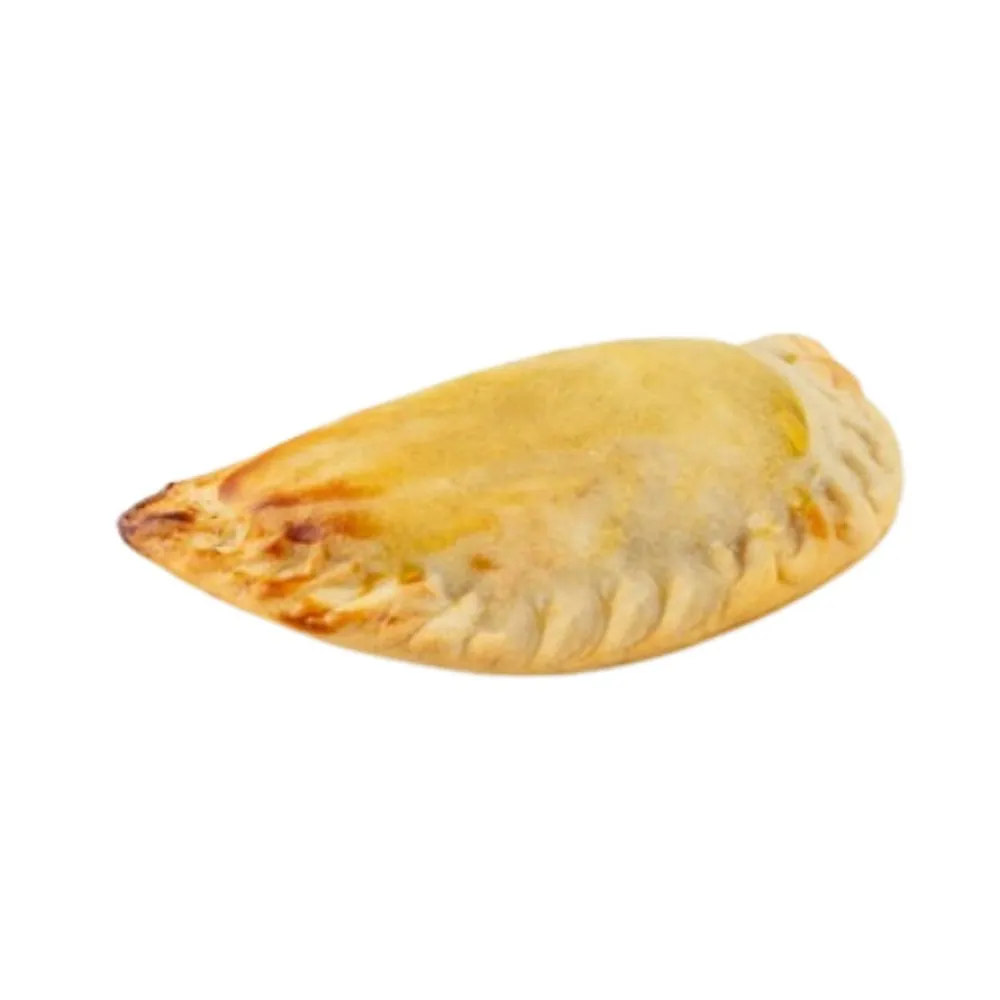
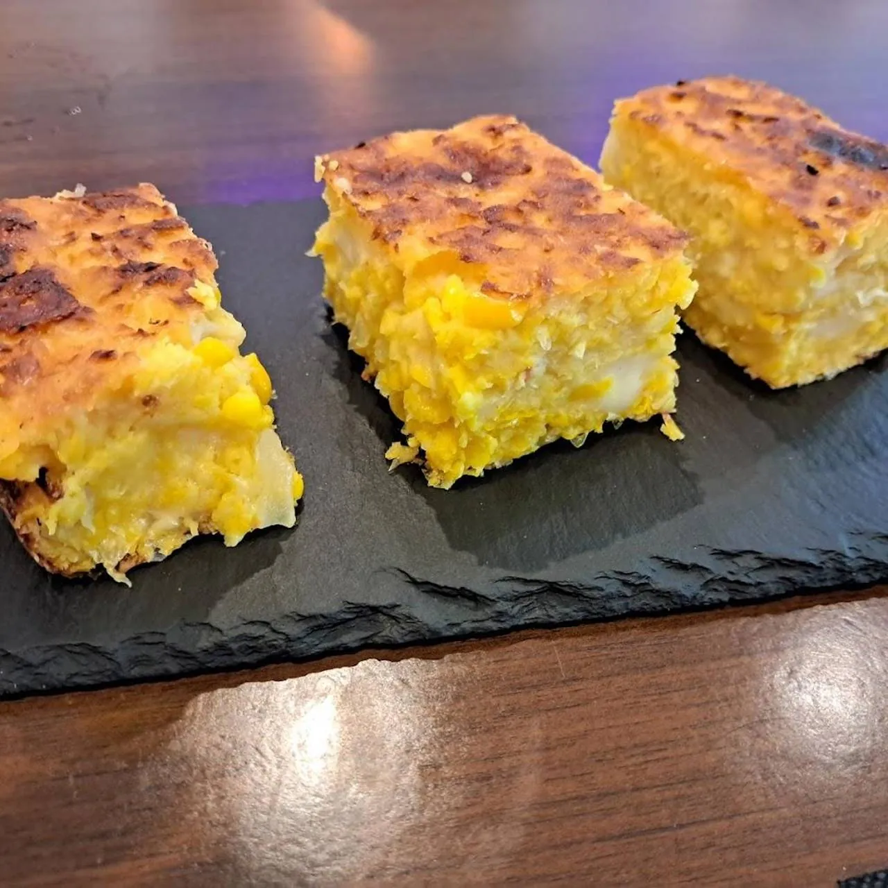

💼
Pack oficina
Comida contundente para una persona. Ideal con Ticket Restaurant® en Uber Eats.
Empanadas recién hechas, chipa guazú todavía templada y milanesas que no caben en la caja. Pide por Glovo, Uber Eats o encárganos por WhatsApp y pasa a recogerlo sin comisiones.

Envío rápido en la zona. Con Glovo Prime, muchas veces el envío te sale gratis.
Pedir en Glovo
Uber Eats★ 4,9 · 43 valoraciones
Acepta Ticket Restaurant® en la app y tiene la carta más amplia: picada completa, mandi'ó chyryry…
Pedir en Uber Eats Para llevarSin comisiones · listo a tu hora
Para llevarSin comisiones · listo a tu hora
Escríbenos por WhatsApp, te confirmamos la hora y lo recoges en Carrer de la Muntanya 115.
Encargar por WhatsApp
Las tres opciones tienen la misma cocina detrás. Cambia la forma de pago, el envío y alguna sorpresa en la carta.
| Glovo | Uber Eats | Recoger en local | |
|---|---|---|---|
| Valoración | 97% satisfechos | 4,9 ★ (43) | 4,6 ★ en Google (739) |
| Ideal para | Pedir rápido a casa, sobre todo con Prime | La comida de la oficina con Ticket Restaurant® | Pedidos grandes y ahorrarte el envío |
| Pedido mínimo | El que indique la app | 10 € | Sin mínimo |
| Pago | Tarjeta en la app | Tarjeta y Ticket Restaurant® en la app | En el local |
| Carta | Clásicos, milanesas, tapas y bebidas | La más amplia: picada completa, mandi'ó chyryry, mondongo… | Toda la carta + especiales del día |
| Comisiones | Gastos de envío según la app | Gastos de envío según la app | 0 € |
Precios, mínimos y zonas de reparto los gestiona cada aplicación y pueden variar según tu dirección y la hora.
Abre Glovo o Uber Eats y busca «Loren Gastrobar», o escríbenos por WhatsApp si vas a recoger.
¿Dudas con algún plato? Mira la guía de sabores o pregúntanos.
Todo se prepara al momento: las empanadas se fríen, la milanesa se empana y el mbejú sale de la plancha.
Y si te ha gustado, déjanos tu reseña: nos ayuda muchísimo. ¡Aguyje!
Nuestros favoritos para pedir a casa y un truco de Loren para que estén perfectos si tardas en comerlos.

Aguantan el viaje de maravilla y son perfectas para compartir.
🔥 Truco: 5 min en el horno a 180 °C y vuelven a crujir.Rica templada y aún mejor al día siguiente.
🔥 Truco: vuelta y vuelta en sartén con una gota de mantequilla.
Viaja entera y se corta en porciones en casa.
🔥 Truco: 20–30 segundos de microondas y lista.
Raciones enormes: una da para dos si pides entrante.
🔥 Truco: al horno, nunca al microondas, para que siga crujiente.
El clásico callejero paraguayo, con patatas.
🔥 Truco: ábrelo nada más llegar para que no se humedezca.
Mejor comerlo pronto: el queso está en su punto.
🔥 Truco: sartén caliente, 1 minuto por cada lado.Comida contundente para una persona. Ideal con Ticket Restaurant® en Uber Eats.
Para cuatro: empanadas, dos milanesas para compartir y los clásicos paraguayos.
Todo para picar delante de la tele. Cervezas incluidas.
Totales orientativos con precios de la carta. Para pedirlo en Glovo o Uber Eats añade los platos desde la app; con «Encargar» se abre WhatsApp para recogerlo en el local.
El reparto lo hacen Glovo y Uber Eats, y cada app te confirma si llega a tu dirección. Normalmente cubre los barrios cercanos a Camp de l'Arpa y Sant Martí. Si no te llega, ¡ven a recogerlo!
En las apps puedes pedir mientras la cocina esté abierta (en Uber Eats, aproximadamente de 10:45 a 22:30). Para recoger en local, consulta nuestro horario.
El vorí vorí, el pira caldo y el soyo se preparan los fines de semana y en cantidad limitada. Escríbenos por WhatsApp y te decimos si quedan para llevar.
Sí, a través de Uber Eats puedes pagar con Ticket Restaurant®.
¡Claro! Para grupos te recomendamos nuestras bandejas de catering. Mira la página de eventos y catering y pide presupuesto sin compromiso.
Antes de pedir, contacta con nosotros por teléfono o WhatsApp (602 07 68 28) y te informamos de los alérgenos de cada plato. Muchos clásicos paraguayos se elaboran con mandioca y maíz, sin trigo, pero en una cocina donde también se trabaja con trigo.
Las apps pueden tener precios ligeramente distintos a los de sala. Recogiendo en el local te ahorras los gastos de envío.
Elige tu app favorita y en un rato tienes Paraguay en casa.